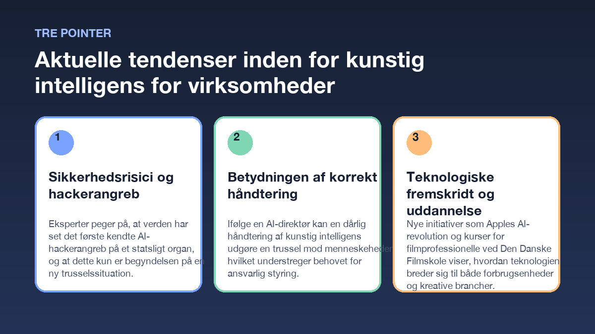

|
Aktuel briefing
Aktuelle tendenser inden for kunstig intelligens for virksomheder
|
Kunstig intelligens spiller en stadigt større rolle i erhvervslivet, hvilket medfører både nye muligheder og væsentlige sikkerhedsmæssige udfordringer. Her er tre centrale nedslag fra den aktuelle udvikling. |
|
Pointe 1
Sikkerhedsrisici og hackerangreb
Eksperter peger på, at verden har set det første kendte AI-hackerangreb på et statsligt organ, og at dette kun er begyndelsen på en ny trusselssituation.
kilde
|
|
Pointe 2
Betydningen af korrekt håndtering
Ifølge en AI-direktør kan en dårlig håndtering af kunstig intelligens udgøre en trussel mod menneskeheden, hvilket understreger behovet for ansvarlig styring.
kilde
|
|
Pointe 3
Teknologiske fremskridt og uddannelse
Nye initiativer som Apples AI-revolution og kurser for filmprofessionelle ved Den Danske Filmskole viser, hvordan teknologien breder sig til både forbrugsenheder og kreative brancher.
kilde · kilde
|
 |
Kort fortaltUdviklingen inden for kunstig intelligens bevæger sig hurtigt, og danske virksomheder bør være opmærksomme på både de nye teknologiske muligheder og de tilhørende risici. |
Kilder- Mastering AI for European Film Professionals - Den Danske Filmskole (Mon, 01 Dec 2025 17:58:43 GMT)
- Ekspert efter verdens første kendte AI-hackerangreb på statsligt organ: 'Det er kun begyndelsen' - dr.dk (Thu, 24 Sep 2026 07:00:00 GMT)
- AI-direktør: Dårlig håndtering af AI kan true menneskeheden - dr.dk (Wed, 23 Sep 2026 07:00:00 GMT)
- Ændrer iPhone for altid: Nu kommer Apples AI-revolution - Ekstra Bladet (Mon, 08 Jun 2026 07:00:00 GMT)
|
| Udarbejdet som en kildebaseret briefing. |